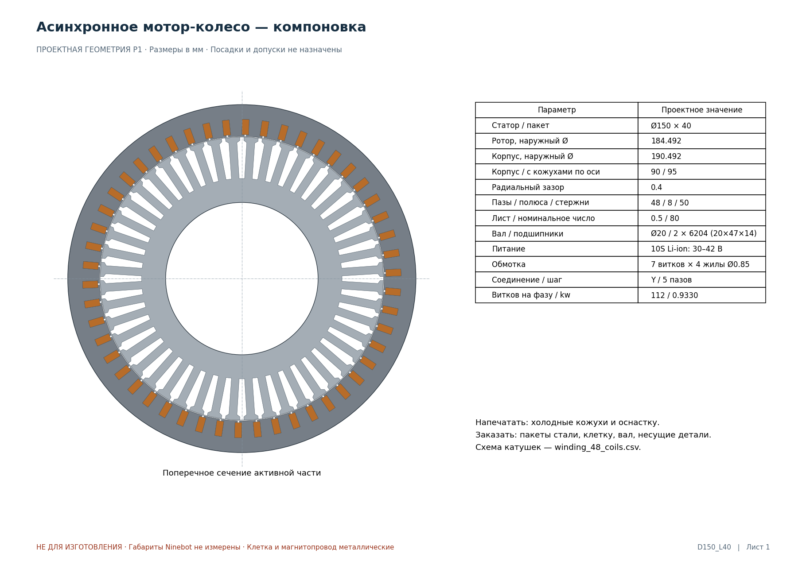

Четыре расчётных листа PDF · Изменить диаметр · Сборка SOLIDWORKS

АСИНХРОННОЕ МОТОР-КОЛЕСО P1 — РАСЧЁТ И ПАРАМЕТРИЧЕСКАЯ CAD, 17.11.2026 Результат: проектная модель D150_L40 под готовую плату DRV8302 SKU71451 и STM32G431. Это воспроизводимая инженерная прикидка и номинальная компоновка. Выпуск в производство и дорожные испытания не разрешаются фактом этого расчёта. Неизвестные размеры Ninebot заменены явно заданными проектными размерами; файл донорских измерений оставлен без подстановки выдуманных данных. ФАЙЛЫ И СМЕНА ДИАМЕТРА Открыть D150_L40/CAD/ACIM_HUB_D150_L40.SLDASM. Детали сохранены в native SOLIDWORKS2020, эскизы и выдавливания доступны для редактирования. Мастер параметров: parameters.json + geometry.py. CHANGE_DIAMETER.cmd запрашивает диаметр СТАТОРА и длину пакета. Режим 1 строит CAD/DXF, режим 2 также запускает новый FEMM и расчёт обмотки. Варианты 110x30,130x30,150x40 уже построены. Диапазон генератора 110..170 мм и пакет 20..50 мм. Это диапазон геометрии, а не гарантия работоспособности каждого размера. Радиальный зазор 0.4 мм, вал 20 мм и подшипники 6204 не масштабируются вместе с диаметром. Наружный размер корпуса пересчитывается отдельно. Глобальные переменные в текущих SLDPRT справочные. Изменение диаметра всего двигателя выполняется генератором, не одной размерной правкой внутри произвольной детали. Все компоненты сборки зафиксированы в общей системе координат. Кинематические сопряжения/анимация вращения не создавались. ИСХОДНЫЕ ДАННЫЕ СтаторØ150; отверстиеØ80.769; пакет 40; роторØ184.492; корпусØ190.492x90, с кожухами осевая ширина 95. 48 пазов, 8 полюсов, 50 стержней, двухслойная обмотка, укороченный шаг 5 пазов. Сталь 0.5 мм, коэффициент заполнения 0.95. Материал магнитопровода не выбран у изготовителя. Линейная оценкаμr=2000 и нелинейная проверка по справочной M19 из библиотеки FEMM. Колесо по качению 254 мм; масса самокат+человек 120 кг; Crr=0.015; CdA=0.6 м²; воздух 1.225 кг/м³. Это допущения, не измеренные характеристики. Плата производителем заявлена 5.5–45 В и 15 А; неизвестно, относятся 15 А к пику, фазному RMS или другому режиму. Принят консервативный потолок 15 А peak с расчётной пульсацией и 9 АRMS. MOSFET Rds_hot=20 мОм, шунт≈5 мОм, deadtime0.5 мкс, PWM16 кГц — расчётные допущения, а не идентификация полученной платы. 10S Li-ion:30–42 В, номинал 36 В. До 45 В от полностью заряженной батареи остаётся 3 В: защита шины/рекуперация/паразитные выбросы требуют отдельной схемной проверки.48 В13S(54.6 В) сюда не подходит. МЕТОДИКА И ФОРМУЛЫ F дор=m*g*(sinθ+Crr*cosθ)+0.5*rho*CdA*v²+m*a; T кол=F дор*R кол; P вал=T кол*ωм. FEMM: полный 360° срез, неподвижная геометрия, комплексный ток фаз 1A peak; частота 0.5,1,2,4,8,16 Гц идентифицирует зависимость L(fslip). L(fslip)=Lleak+M/(1+j*2π*fslip*τr); Rr=M/τr. Концевые кольца введены фундаментальной поправкой к проводимости клетки. При смене числа витков M,Lleak,Rr умножаются на(N/Nref)². Пазовая медь и R фазы пересчитываются по выбранному проводу и средней длине витка. ψr=M*id; Te=1.5*p*M*id*iq; ωsl=(Rr/M)*iq/id; ωe=p*ωm+ωsl. ud=Rs*id−ωe*Lleak*iq_total; uq=Rs*iq_total+ωe*(M+Lleak)*id; Iphase_rms=sqrt(id²+iq_total²)/sqrt2. SVPWM экран: |u_pwm|≤0.9*Vdc/sqrt3−1 В; MOSFET иdeadtime добавлены вдоль вектора тока. Ток потерь стали учтён отдельно от тока момента. Pcu=1.5*Rs*(id²+iq_total²); Pcage=1.5*Rr*iq²=Te*ωsl/p; прочие тепловые потери добавляются без фиктивного увеличения момента. Модель стали:3.5 Вт/кг при 1.5 Т50 Гц, смесь 60%гистерезис+40%вихревые; коэффициенты не измерены. PWM/добавочные потери=3 Вт+1.5%(P вал+Pcage). Пульсация тока оценена Vdc/(8*fPWM*Lleak) как половина размаха. Это скрининг, не временная модель всех векторов SVPWM. ОБМОТКА D150_L40 48 катушек по 7 витков, в 4 параллельных проводаØ0.85 мм. Звезда;16 катушек последовательно на фазу;112 витков на фазу;kw=0.933013. Медь в проводнике 2.2698 мм²; площадь пазовой части 76.886 мм²; голая медь в пазу 41.33%. Средняя длина витка 172.48 мм; длина одной жилы фазы 19.72 м; суммарно 236.6 м; с 15%запасом 272.1 м. R фазы 20°C=0.14977 Ом; между фазами звезды=0.29953 Ом. Сначала проверить посадку эмалированного провода с реальной пазовой/межслойной изоляцией на одной пробной катушке. Полная раскладка и знаки в D150_L40/winding_48_coils.csv: катушкаj занимает верхний слойj и нижнийj+5 по модулю 48; A+,C−,B+,A−,C+,B− по фазным поясам. РАБОЧАЯ ТОЧКА15 КМ/Ч, РОВНО,120 КГ,36 В 313.30 об/мин; T полезный=3.053 Нм; P вал=100.16 Вт; I ф=7.927A RMS /11.211A peak. id=8.597A peak; iq момента=7.067A peak; f=22.469 Гц; f скольжения=1.583 Гц; B зазора=0.499 Т. Потери: обмотка 34.89 Вт; клетка 7.88 Вт; сталь 2.03 Вт; трение 3.82 Вт; добавочные 4.62 Вт. Всего потерь 53.24 Вт; КПД двигателя модели 65.3%; батарея≈162.6–168.6 Вт (4.52–4.68A при 36 В). 500 Вт полезной мощности, резкий разгон и подъём 5% эта связка с принятыми токами не обеспечивает. Задача текущей модели — исследовательский привод, а не подтверждённая замена серийному самокату. ТЕПЛО 3 узла: обмотка, статор, ротор. R обм-статор=0.7 К/Вт; R статор-среда=1.2; R ротор-среда=0.9; R статор-ротор=4.0. Все R тепл допущены. Учитывается рост сопротивления медиα=0.00393/К при постоянныхid/iq; плотность/теплоёмкости по номинальным материалам. Модель не заменяет термоиспытание. При 25°C среды через 60 мин: обмотка 86.7°C, статор 60.3°C, ротор 37.7°C. Асимптотическая температура обмотки≈97.9°C; экран 90°C достигается примерно за 72.2 мин. Длительный режим 15 км/ч под 90°C НЕ подтверждён даже этой сетью. Для длительного режима требуется проработка теплопути к наружному металлу, затем измерения. PLA/PETG в горячие пазы, несущую обойму или посадки подшипников не закладываются. МЕХАНИКА И МАССА Идеализированный гладкий сплошной валØ20 мм: нагрузка 2119 Н (60%массы на заднее колесо,3g), пролёт 130 мм; момент 20 Нм. σизг=36.42 МПа; τ=12.73 МПа; σэкв=42.58 МПа; запас к условным 235 МПа=5.52. Прогиб оси≈0.0345 мм. После назначенных резервов биения, эксцентриситета, люфта и температуры остаётся 0.155 мм на деформации крышек и сборку. Активная сталь 4.60 кг, клетка 1.53 кг, обмотка 1.20 кг. Номинальная компоновка с металлом и кожухами≈9.7 кг без шины, крепежа и проводки. Эта масса велика для 100 Вт рабочего режима. Она показывает необходимость облегчения и использования измеренных деталей донора перед заказом; преимущественно пластиковым такой электромагнитный узел не получится. Проверка вала не учитывает резьбу, лыски, паз, кабельное отверстие и усталость. Крепление магнитопровода/ротора, крышек и оси, стопоры подшипников, крепёж и интерфейс обода ещё не детализированы. ВCAD это прямо отмечено. ВЕРИФИКАЦИЯ Три диаметра: в каждой сборке 16 компонентов,110 твёрдых тел; SOLIDWORKS kernel Check3:0 ошибок; номинальных объёмных пересечений 0, скрытые детали включены, касания исключены. Площадь точных контуров DXF с дугами независимо совпала с объёмами nativeCAD для обоих пакетов при всех трёх диаметрах. FEMM D150: 127742 элемента; уточнение 188710. Изменение комплексной индуктивности на проверенных частотах≤0.144%. Ошибка аппроксимации L(f)=0.0174%. Нелинейная проверка M19:12.728A peak,2 Гц; B зазора=0.676 Т; максимум стали по выборке=1.764 Т; Te=8.728 Нм. Это отдельный блокированный режим при Nref=10, а не тяговой момент на 36 В. 9 групп физических проверок: баланс мощностей/скольжения, peak/RMS/напряжения, дискретная обмотка и заполнение, CAD/DXF, сохранение зазора, сетка FEMM/момент, независимая ЭДСФарадея, корректное отклонение неподходящих режимов. ГРАНИЦЫ ГОТОВНОСТИ Есть: параметрический источник геометрии; nativeCAD/STEP; номинальные DXF;STL холодных кожухов/оправки; обмоточная таблица; FEMM файлы; электромеханический и тепловой скрининг; BOM. Остаются до изготовления: реальные размеры донора/рамы, материал ламелей, технологические скругления/изоляция/пакетирование, реальные лобовые части и соединения клетки, крепёж/посадки/удержание, механическая FEA, балансировка, thermal/drive tests. Прошивка инвертора и текущий стенд не изменялись. Исследовательские эквивалентные параметры нельзя напрямую переименовать в Lm/Lls/Llr MCSDK. ПЕРВИЧНЫЕ ИСТОЧНИКИ EC BUYING, готовая плата SKU71451: https://www.ecbuyingbom.com/drv8302-high-power-motor-drive-module-st-foc-vector-control-bldc-product/ TI, DRV8302,3.3 В/5 В и 3/6PWM; предел микросхемы не является пределом всей платы: https://www.ti.com/product/DRV8302 David Meeker/FEMM, Induction Motor Example, идентификация эквивалентной схемы статическими AC решениями: https://www.femm.info/wiki/InductionMotorExample SKF,6204: https://www.skf.com/fr/products/rolling-bearings/ball-bearings/deep-groove-ball-bearings/productid-6204-2RSH W.Chan, mini_IM, источник идеи учебного печатного асинхронного двигателя; лицензия оригинала CC-BY-NC4.0: https://github.com/wchan29/mini_IM Новая геометрия наружного ротора и CAD созданы для этого проекта; исходныйmini_IM сохранён отдельно вreference_mini_IM со своей лицензией. Подробные числа, все отброшенные обмотки и ограничения: D150_L40/results.json; версия исходников и результаты SHA256_manifest.json.